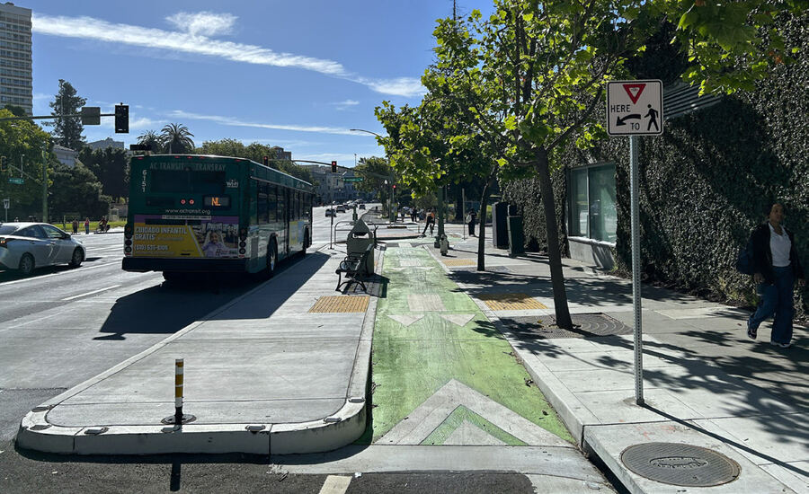
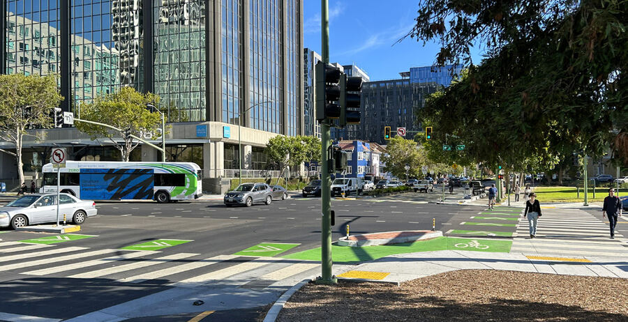

Lakeside Family Streets
In June 2026, OakDOT completed the Lakeside Family Streets project, which added one-half mile of separated bike lanes along Lake Merritt. The project included Harrison St from Thomas L. Berkley Way to 27th St, and Grand Ave from Harrison St to Bay Pl. It also built a protected intersection at Harrison St/Grand Ave and repurposed the slip turn at this location to be part of the two-way separated bike lanes along the lake.
The project built upon the Lakeside Green Streets project, completed in 2019, which made major improvements to the downtown edge of Lake Merritt. Lakeside Family Streets is key to OakDOT's development of separated bike lanes, connecting to recently completed work on 20th St and Lakeside Dr and to upcoming work on 27th St and Grand Ave.

